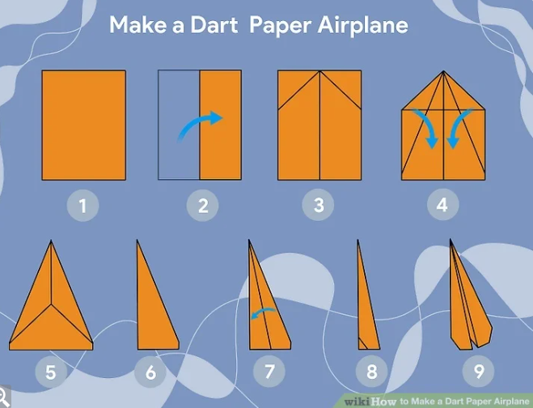

Hello everyone! My name is Tripti Gupta and I am a first-year B.Tech student in CSE with Artificial Intelligence and Machine Learning. In this project, I am going to share my hobby of making paper planes.
Making paper planes is a fun and creative hobby. It helps us understand basic concepts of design, balance, aerodynamics and flight. Different folding techniques can create paper planes that fly differently.

A simple paper plane can be made using just one sheet of paper. You can experiment with different shapes and folds to improve its flight.
A paper plane is affected by four basic forces: lift, gravity, thrust and drag. The shape and balance of the plane can affect how far and how smoothly it flies.
Try changing the size and shape of the wings and compare the flying distance of different designs.
You can learn more about paper airplanes and aerodynamics here:
Click here to learn more about Paper PlanesMade by Tripti Gupta | B.Tech CSE (AI & ML) | AI Club